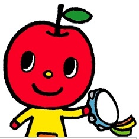

Yoyowen音樂教室是什麼呢?
配合因年齡而不同的身心成長，進行教育的想法，於這樣適齡教育的概念，我們讓孩子自然而然的獲得『音感』。 小朋友的成長速度會隨著年齡而不同，所以，當某一項能力明顯成長時，就應當依照它的發展特性給予適當的體驗。Yoyowen音樂教室的課程適合2歲~8歲的小朋友。我們期待您的加入喔！
班級介紹
台大班森
許許多多不同的音樂體驗讓小朋友的眼睛都亮了起來2~3歲的幼兒對周遭環境充滿好奇，趣味的音樂表演，讓他們學習身體律動。
待修理班
3~4歲是基本的感性培養時期，這是幼兒成長階段中最重要的時期，在這時期的種種體驗，不但會對將來造成深刻的影響，同時更能決定孩子們的心靈色彩。
腦袋有洞班
想像力豐富的4歲兒正是充滿好奇心的階段。這個時期給予美好的音樂體驗，不論是聽聽音樂、唱唱歌、還是玩玩鍵盤都能擴展孩子的想像力，並奠定好的音樂感受力與創作能力。
人生重來班
5歲是小朋友聽音能力急速發長的時期。這個時期可以藉由各種音樂體驗來培養綜合性的音樂基礎能力，例如聽辨 DoReMi，及認識音符的位置。
欠修理班
7歲的孩子手指的運動神經已經完全發育，因此，只要促進演奏的慾望便能讓孩子自動自發地去彈奏。然而，在兒童班裡不非僅僅重視彈奏能力，我們同樣重視聽音能力、讀譜能力、與豐富情感的培育。
卡住森77班
8歲的小朋友，對於音樂的感受性及自主性更強。本課程適合無任何音樂基礎的學生學習，在團體班的課程裡學習到正確的聽音能力、及正規的Yoyowen鍵盤教學，並以生動活潑的方式學習樂裡。